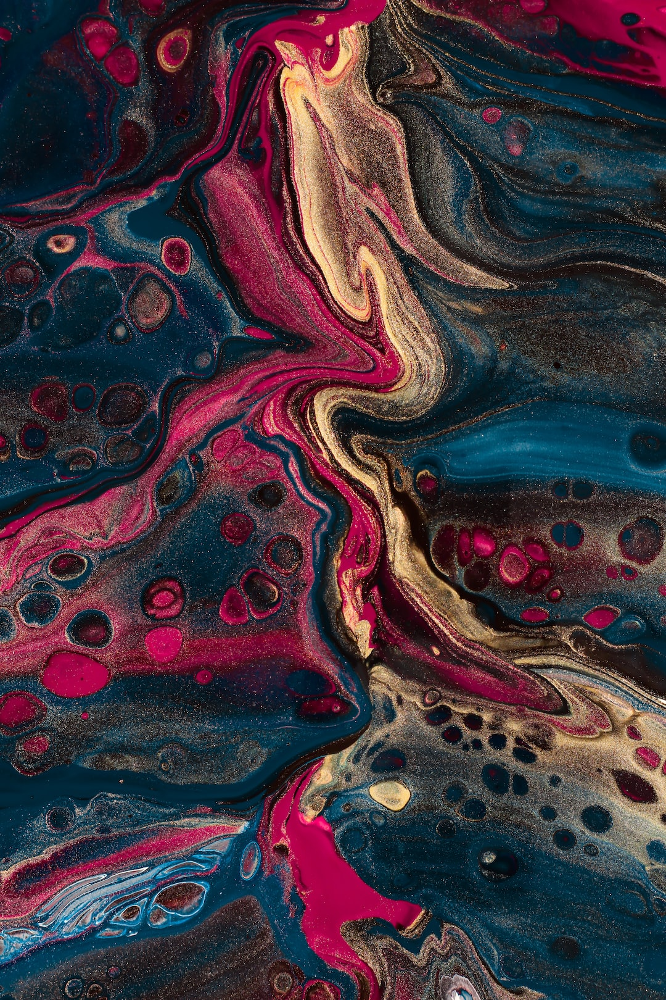

Upscayl
GitHub
Donate
Upscayl
Free and Open Source AI Image Upscaler
Upscayl Guide
Download v2.5.5
macOS 🍎
Linux 🐧
Windows 🐌

![Upscayl Download Counter](https://img.shields.io/github/downloads/upscayl/upscayl/total.svg?style=for-the-badge&logo=&labelColor=ede9fe&color=8e6bf6)